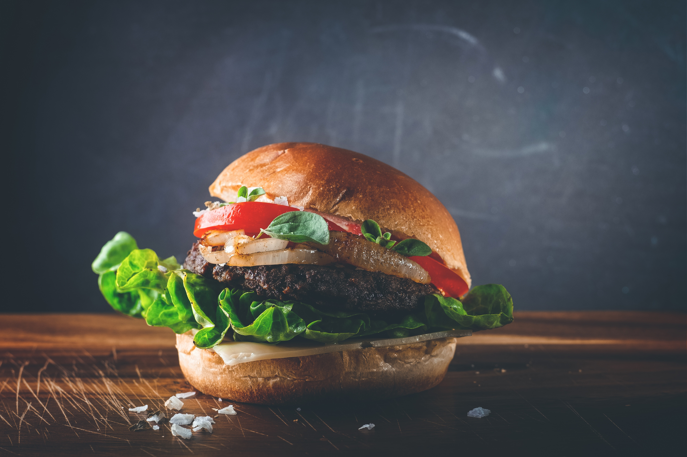
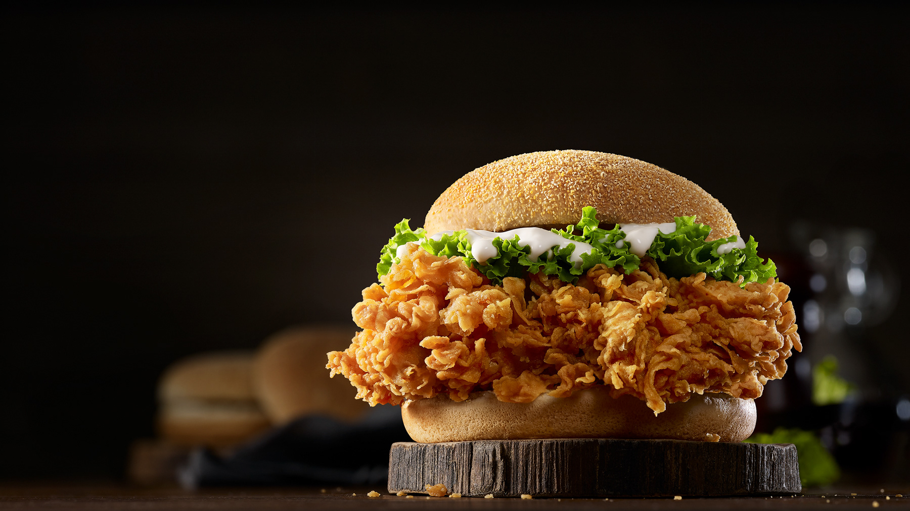

Preheat grill to medium-high heat.
Form ground beef into patties and season with salt and pepper.
Grill patties to desired doneness, adding cheese slices during the last minute of cooking.
While burgers cook, fry bacon slices until crispy.
Toast hamburger buns on the grill.
Assemble burgers by placing cooked patties on toasted buns, topping with BBQ sauce, bacon, lettuce, tomato, and onion slices..
HAWAIIAN TERIYAKI BURGER
Ingredients
Ground beef: 1 lb
Teriyaki sauce: ¼ cup
Pineapple slices: 4
Swiss cheese slices: 4
Hamburger buns: 4/li>
Lettuce leaves: 4
Red onion slices: 4
Salt and pepper to taste
Preparation
Preheat grill to medium-high heat.
Form ground beef into patties and season with salt and pepper.
Grill patties to desired doneness, brushing with teriyaki sauce during the last few minutes of cooking.
Grill pineapple slices until caramelized.
Toast hamburger buns on the grill.
Assemble burgers by placing cooked patties on toasted buns, topping with Swiss cheese, grilled pineapple, lettuce, and red onion slices.
JALAPENO POPPER BURGER

Ingredients
Ground beef: 1 lb
Cream cheese: ½ cup
Jalapeno peppers, sliced: 2-4
Bacon slices: 4-6 slices
Hamburger buns: 4
Lettuce leaves: 4
Tomato slices: 4
Salt and pepper to taste
Preparation
Preheat grill to medium-high heat.
Form ground beef into patties and season with salt and pepper.
Grill patties to desired doneness.
In a separate pan, sauté jalapeno slices until softened.
Spread cream cheese on toasted hamburger buns.
Assemble burgers by placing cooked patties on cream cheese-covered buns, topping with sautéed jalapenos, bacon, lettuce, and tomato slices.
MUSHROOM SWISS BURGER
Ingredients
Ground beef: 1 lb
Swiss cheese slices: 4
Mushrooms, sliced: 1 cup
Onion, sliced: 1
Worcestershire sauce: 2 tbsp
Hamburger buns: 4
Lettuce leaves: 4
Salt and pepper to taste
Preparation
Heat a skillet over medium heat and add sliced onions and mushrooms. Cook until softened.
Form ground beef into patties and season with salt, pepper, and Worcestershire sauce.
Grill patties to desired doneness, adding Swiss cheese slices during the last minute of cooking.
Toast hamburger buns on the grill.
Assemble burgers by placing cooked patties on toasted buns, topping with sautéed mushrooms and onions, lettuce, and tomato slices.
ZINGER BURGER

Ingredients
Chicken breasts: 4
Buttermilk: 1 cup
All-purpose flour: 1 cupr
Paprika: 1 tbsp
Garlic powder: 1 tsp
Cayenne pepper: 1 tsp
Hamburger buns: 4
Mayonnaise: ½ cup
Pickle slices: 8
Salt and pepper to taste
Preparation
Marinate chicken breasts in buttermilk for at least 30 minutes.
In a separate bowl, mix flour, paprika, garlic powder, and cayenne pepper.
Remove chicken from buttermilk and dredge in seasoned flour mixture.
Fry chicken until golden and crispy.
Toast hamburger buns.
Assemble burgers by placing fried chicken on toasted buns, topping with mayonnaise, lettuce, and pickle slices.
Classic American Smash Burger
Ingredients
2 cups of heavy cream
Ground beef: 1 lb
American cheese slices: 4
Hamburger buns: 4
Pickle slices: 8
Ketchup: ¼ cup
Mustard: ¼ cup
Onion, sliced: 1
Salt and pepper to tastes
Preparation
Divide ground beef into small portions and form into balls.
Heat a skillet over medium-high heat and place balls of beef on it.
Smash each ball with a spatula to flatten and cook until crispy on one side.
Flip patties and top each with a slice of American cheese.
Toast hamburger buns.
Assemble burgers by placing cooked patties with melted cheese on toasted buns, topping with ketchup, mustard, onion slices, and pickles.

.jpg)